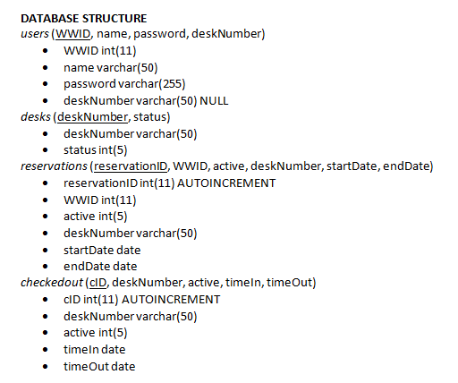

jrj85@cornell.edu • 914-924-8219
jrj85@cornell.edu • 914-924-8219


I spearheaded, designed, and built a seating reservation system from scratch in order to minimize the office overcrowding problem and to increase efficiency in the Johnson & Johnson workplace.
My manager gave me this project in the summer of 2016 in an attempt to fix the problem of overcrowding (1.2 people per desk) in our office space. My task was to build a real-time seating reservation system in order to increase employee efficiency and decrease overcrowding. I acted as the Project Owner, Designer, and Developer. There are two use cases for the system: the first was that a user had to be able to reserve a desk for the day. The second was that a remote user had to be able to "check out" their desk to make it available for someone else to sit in for the day.
I conducted interviews with five interns and full time employees to discover the pain points of the current desk allocation system. I then turned these interviews into user stories of the format "As a
I then translated these user stories into business requirements.
From user interviews, I discovered that most people prefered to use a clickable floor plan as opposed to seeing a list of available desks. As a result, I decided to use the HTML5 map feature to display available desks. My rough outline of the user flow is here.
I built the system using HTML, CSS, Bootstrap, JQuery, HTML5/JavaScript Server Side Events, PHP, and MySQL in 2-week long Agile sprints. The floor plan updates itself in real time based on information in the database through Server Side Events. The database design can be seen below. I used MySQL Events to automatically clear old reservations and old check-outs, and to add new check-outs in the queue.
Features include: signup, login, see available desks, reserve a desk for the day, check out your desk for today, check out your desk for tomorrow by adding it to the queue.

I tested the floor plan on a couple of my peers, and I used their feedback to improve during the next spring by adding backwards navigation and better error checking and notifications.
Below you can find a video demo of the reservation system! In this demo I am using two browsers (one on Incognito) in order to demonstrate the real-time functionality.
jrj85@cornell.edu • 914-924-8219